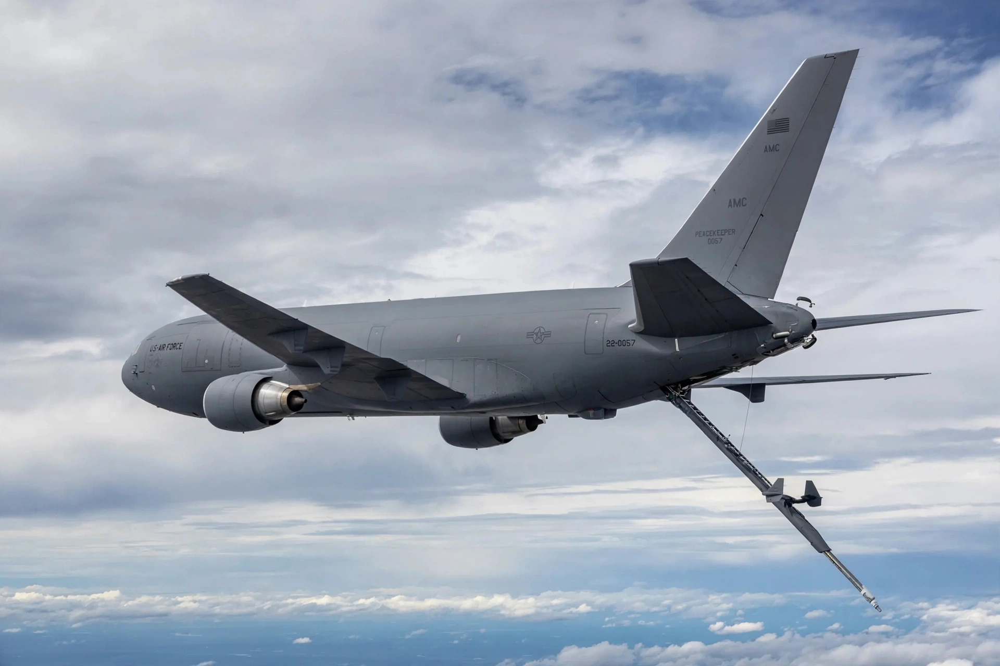

| Boeing KC-46 Pegasus | |
|---|---|
| Manufacturer | Boeing |
| First flight | December 28, 2014 (767-2C); September 25, 2015 (KC-46) |
| Introduction | January 2019 |
| Status | In production, in service |
| Primary users | United States Air Force; Japan Air Self-Defense Force |
| Developed from | Boeing 767 |
The Boeing KC-46 Pegasus is an American military aerial refuelling and strategic military transport aircraft developed by Boeing from its 767 jet airliner. In February 2011 it was selected by the United States Air Force (USAF) as the winner in the KC-X tanker competition to replace older Boeing KC-135 Stratotankers. The first aircraft was delivered to the USAF in January 2019.

The KC-46 programme followed the cancelled KC-767 lease deal of the early 2000s and the annulled 2008 KC-X award to Northrop Grumman/EADS (whose A330 MRTT-based KC-45 had briefly won). Boeing won the fixed-price development contract in 2011. The programme ran into delays and cost overruns borne largely by Boeing, including wiring redesigns, problems with the Remote Vision System used by boom operators, and a deficient cargo-loading system; Boeing has taken more than $7 billion in charges on the programme. Redesign of the vision system (RVS 2.0) was agreed to remedy depth-perception problems.
The KC-46 can carry 96 tonnes of fuel and refuel via a fly-by-wire boom and centreline and wing hose-and-drogue systems. It also carries up to 65,000 lb of cargo or 114 passengers. The USAF plans to buy 179 aircraft; Japan became the first export customer in 2017, and Israel ordered four (later eight). Despite its troubled development, the Pegasus assumed an increasing share of USAF tanker taskings in the early 2020s as KC-135s and KC-10s retired.